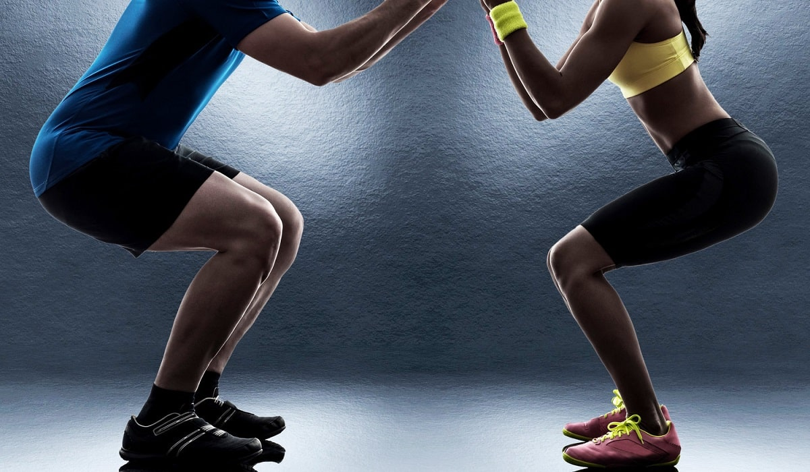

SQUAT YAPMA

SQUAT NEDİR?
Squat; çömelme olarak tanımlanır. Vücudun yapmış olduğu ana hareketlerden birisidir. Kas geliştirme ve atletik performans adına squat hareketi sıkça yapılır. Vücut ağırlığı ya da halter, dambıl gibi ekipmanlar ile çömelme hareketi yapılabilir.
SQUAT NASIL YAPILIR?
- Bacaklar omuz genişliğinde açılmalıdır.
- Ayaklar ise 45 derecelik açıyla açılır.
- Topuklar, hareket sırasında yerden ayrılmamalı ve topuklar ile eğilip kalkılmalıdır.
- Dizler; ayak uçlarını aşırı bir şekilde geçmemelidir.
- Baş dik olmalı ve sırt düz bit biçimde tutulmalıdır.
- Popo; hafif bir şekilde dışarı çıkarılmalı, hafifçe eğim ile hareket edilmelidir.
- Genel şekilde karın sıkılmalıdır. Ağırlık kullanılması halinde karnı daha fazla sıkmaya dikkat etmek gerekir.
- Nefes alıp çömelmeli, nefes verip kalkılması gerekir.
|